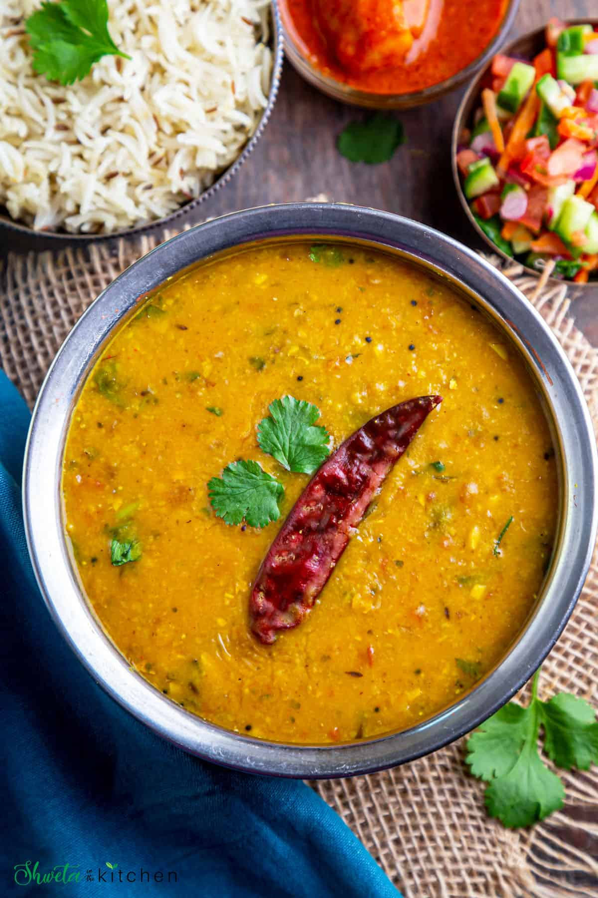

Daal Recipe

Description
Ingredient :
- Toor Daal
- Tomatoes
- Onion
- Ghee
- Salt
- Garlic
- Ginger
- Curry leaves
- Dried Red chilli
- Red chilli powder
- Garam masala
- Tumeric powder
- Coriander powder
- Lemon
- Coriander
Steps :
Cooking the Daal:
- Rinse dal 3-4 times until the water runs clear.
- Transfer the rinsed dal to an Instant Pot stainless steel insert, or stovetop pressure cooker
with 3 cups of water, 1 teaspoon salt. Close the lid.
In Instant Pot, cook with vent sealing on manual (pressure cook) high for 10 mins followed
by natural pressure release.
For the stovetop pressure cooker, cook on medium heat for 4-5 whistles. Let steam
release naturally.
You can also cook dal in a pot on the stovetop until the dal is soft and mushy just that
it will take a longer time.
- When the pressure comes down (pin drops) open the lid.
- Using a whisk, mash the dal for a smooth texture.
While the daal is cooking, we shall prepare the masala..
Onion-Tomato masala:
- Heat oil in a pan on medium heat. Once hot, add the mustard seeds and allow them to splutter.
- Then add the cumin seeds, asafoetida (thing), dried red chili, and curry leaves. Saute for
a few seconds.
- Stir in the onions, ½ teaspoon salt, and mix well. Cook till the onions are soft and golden
brown in color.
- Add ginger garlic and green chili. Cook for 1-2 minutes until the raw garlic smell goes away.
If needed deglaze with 1-2 tablespoons water to prevent the masala from burning.
- Stir in the turmeric, red chili powder, coriander powder, garam masala, and saute for a
few seconds.
- Add the chopped tomatoes, mix well, cover, and cook until the tomatoes are soft and mushy
(approximately 5 mins).
- Mix and mash tomatoes until oil oozes from the side of the masala.
Now that we have everything preped, time to add it all together and add the tadka.
Making Daal fry:
- Stir in the cooked dal in the pan along with ½ teaspoon salt. Mix until well combined.
- Adjust the dal consistency to your liking by adding ½ to 1 cup water.
- Bring dal to a simmer. Crush Kasuri Methi between your palms and add it to the dal. Simmer
for another 5-6 mins on low-medium heat.
- Finally add some chopped cilantro and lemon juice. Mix well. Turn off the heat.
Dal fry is ready to be served!!
The Daal is ready to be served warm and filling.. Enjoy <3
Back Home